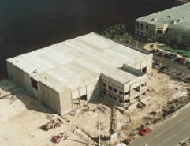

En sociedad
VERCELLI
Bogotá
- 4 Pisos
- 14 Unidades Residenciales
- 1 Piso de Parqueaderos
3.954m2
Bogotá, Colombia (2008)
BARAGGIA
Bogotá
- 5 Pisos
- 14 Unidades Residenciales
- 1 Piso de Parqueaderos
- 1 Sótano de Parqueaderos
3.330m2
Bogotá, Colombia (2008)

VIAREGGI
Bogotá
- 2 Pisos y Altillo
- 6 Apartamentos
- 1 Piso de Parqueaderos
1.300m2
Bogotá, Colombia (2005)
PARQUE SAN NICOLAS INT 7
Bogotá
- 12 Pisos
- 44 Apartamentos
- 2 Sótanos de Parqueaderos
8.800m2
Bogotá, Colombia (2005 - 2006)
PORTAL DE CIPRÉS INTERIOR 12
Bogotá
- 1O Pisos
- 40 Apartamentos
- 2 Sótanos de Parqueaderos
5.570m2
Bogotá, Colombia (2003)
SALUD TOTAL
Bogotá
- 5 Pisos en Total
- 4 Pisos de Oficinas
- 2 Locales Comerciales
- 2 Sótanos de Parqueaderos
2.300m2
Bogotá, Colombia (1997)

BODEGAS_DORAL
Miami
- 2 Pisos
- Oficinas
- Bodegas
2.044m2
Miami, Florida (2000)

PARQUE SAN NICOLAS INT 8
Bogotá
- 12 Pisos
- 44 Apartamentos
- 2 Sótanos de Parqueaderos
8.600m2
Bogotá, Colombia (2005)
KOKORIKO CLL 53
Bogotá
- Restaurante
- 2 Pisos
400m2
Bogotá, Colombia (1999)
CIPRÉS DE LA COLINA
Bogotá
- 7 Pisos
- 34 Apartamentos
- 1 Sótano de Parqueaderos
3.660m2
Bogotá, Colombia (1995)

CIPRÉS DE CASTILLA I
Bogotá
- 12 Casas
- 43 Pisos de Balcón
- 1 Parqueadero Exterior por casa
1.450m2
Bogotá, Colombia (2002)
QUINTAS DE CIPRÉS
Bogotá
- 7 Pisos
- 68 Apartamentos
- 1 Sótanos de Parqueaderos
7.200m2
Bogotá, Colombia (1996)